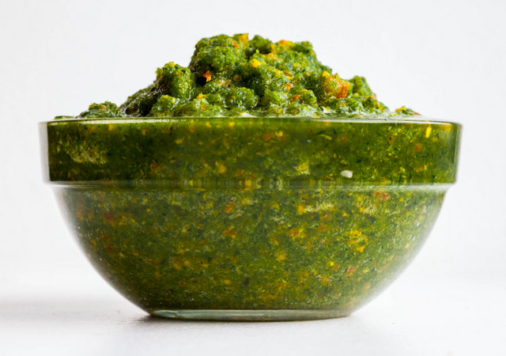

Trini Green Seasoning

Description
Green seasoning is a necessity in a Caribbean household. It's largely responsible for the deep flavours
of our meat dishes and cannot be ommited when cooking these. For example a plate of rice,
dhal and curry chicken would be a foreign entity without that
rich, herby flavour.
Ingredients
- 1 bundle celery (about 4-5 stalks).
- 2 heads garlic, cleaned.
- 3 large onions.
- 6 leaves big leaf thyme.
- 5 sprigs spanish thyme.
- 36 leaves bandania (culantro/shadon beni).
- 12 pimentoes.
- 4 bundles chive (about 12 stalks).
- Water.
- Salt to taste.
- 1/4 cup white vinegar (optional).
- 1 scotch bonnet pepper (optional).
Steps
- Roughly chop the onions, garlic, celery, chives, bandania and big leaf thyme. Add to rest of ingredients.
- Add a small portion of ingredients to a blender together with vinegar and 1/2 cup of water.
- Blend until smooth, adding a handful of ingredients at a time. Add extra water as necessary. Ensure that the blender cover is tightly secured.
- Add salt to taste.
- Once desired consistency is achieved store in airtight containers and refrigerate. If vinegar is not used the mixture will keep for up to 2 weeks. Vinegar will prolong the shelf life to up to a month.
Alternatively the mixture can be frozen in ice cube trays and defrosted as necessary.